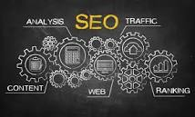

|
Yes, SEO is as relevant as it was ever before. The SEO trends in
2022 have become more sophisticated and user-relevant. Even though the focus has shifted to user intent from
keyword stuffing. To rank higher on the search results has become ambitious as the google algorithm is getting
better at acknowledging content with reliable and relevant information. Search Engine Optimization helps in
directing organic and free traffic towards your site. Quality contentContent with misleading titles and insignificant information can no longer find a place in Google page results. To engage and captivate the audience, you need to provide high-quality content. It’s time to take a shift from long-form to short-form content. Instead of adding several non-specific contents to your website, add content that is relevant to the interest of the target audience. You can ensure readability by finding the appropriate word count and the frequency of the keyword. Link buildingLink building is a significant factor used by Google to evaluate the credibility and authenticity of your web page. The links used by your websites ensure google that the information of content is trustworthy and backed by an authoritative website. To ensure a high ranking in Google SERP, you must use links from high-authority websites that have relevance to your website and content. You can use link building softwares to implement your link building strategies in a better way. Always add the link in your content instead of burying it in the footer, author bio, or sidebar. Remember that the anchor text should be relevant to the content of your website. Image and visual contentConsumers engage more with visual content as it makes them learn more about the brand. The new digital trends like Instagram reels and TikTok have managed to change consumer preference to visual content. They look for an overall experience that is authentic, reliable, and relevant. Brand marketing focuses on storytelling and the visual content provides them the platform to distribute valuable information within a timeframe. 
Mobile and user experienceIt is critical to optimize your content for mobile devices as the search engine looks at the mobile version of a website when they rank content. The mobile phone version is considered a primary version instead of the desktop version. With the increase of the internet user via mobile phone, this change was of utmost importance. A business can easily check the effectiveness of their mobile sites using Google’s free mobile-friendly test or Google’s mobile usability report. Using these tools will improve the overall experience of the consumer. If all this feels like a lot of work you can also outsource SEO to agencies or freelancers. Connect with industry experts and work with them to get better results. ConclusionSEO plays a crucial role in ranking your content and in attracting organic traffic. This means as a business owner you can’t rely on the same old, ineffective SEO strategies. You need to keep up with the changing trends and new Google algorithms. SEO can seem overwhelming but using outdated tactics can negatively impact SEO. Therefore, to ensure that your SEO strategies are effective you must continuously educate yourself about the changing trends. |